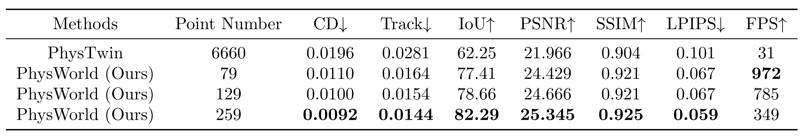
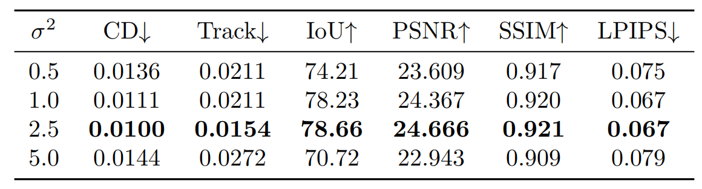
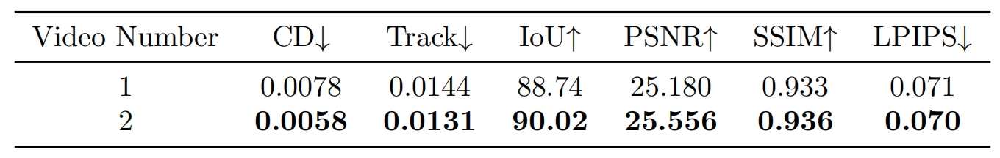

PhysWorld: From Real Videos to World Models of Deformable Objects via Physics-Aware Demonstration Synthesis
Action-Conditioned Future Prediction
With Point Trajectories
Without Point Trajectories
Figure A: Visual results of action-conditioned future prediction. Drag the slider to compare predictions with and without visualization of point trajectories predicted by GNNs. (The consistent coloring of points and trajectories is intended solely for enhanced visualization and carries no underlying significance. The lower-opacity segments represent the ground truth motion of the object.)
Figure B: Visual results of action-conditioned future prediction compared with PhysTwin. Our method’s predicted positions show closer alignment with ground truth compared to PhysTwin.
Unseen Interaction
Figure C: Generalization to unseen interactions. As representative examples, we consider two unseen interaction scenarios: lifting a pushed rope and rotating a lifted sloth. The results show that PhysWorld generates physically plausible predictions, while PhysTwin suffers from artifacts such as fracture-like rope distortions and unnatural foot folding.
Comparison with Video World Models
Figure D: Comparative experiments with WoW-DiT-7B[8] and Cosmos-7B[9]. The qualitative results reveal that using these two video world models to predict object motion easily introduces hallucinations and artifacts, producing completely unreasonable results.
Ablation Studies

Table A: Ablation study on the number of GNN points, comparing prediction accuracy and inference speed (FPS).

Table B: Ablation study evaluating the impact of different perturbation strengths on prediction accuracy.

Table C: Ablation study on the impact of interaction video number on prediction performance.
Comparison with Related Works
| Method | Date | State Representation | Prediction Model | Inference Speed | Real Data Dependency | Deformable Dynamics | Physical Property Embedded in Models |
|---|---|---|---|---|---|---|---|
| VPD [1] | 2023.12 | 3D latent particles | Graph Neural Networks | Slow | High (Hundreds of Multi-view RGB-D videos) | Yes | No (Implicit) |
| HD-VPD [2] | 2024.06 | Dense 3D latent particles | Point Cloud Transformer | Slow | High(Large-scale bi-manual interaction data, about 1.6TB) | No | No (Implicit) |
| PhysTwin[7] | 2025.03 | 3D Points | Mass-Spring Simulator | Medium | Low (Multi-view RGB-D videos of only 1 trajectory under 10s) | Yes | Yes (Spatially non-uniform) |
| 3DGSim [3] | 2025.08 | 3D Gaussian Splatting (3DGS) | Transformer | Slow | High (Multi-view RGB videos, 200 trajectories per object) | Yes | No (Implicit) |
| GWM [4] | 2025.09 | 3D Gaussian Splatting | Diffusion Transformer | Slow | High (50 human demonstrations and 3000 generated demonstrations for each task) | No | No (Implicit) |
| PointWorld [5]* | 2026.01 | 3D Point Flows | Point Transformer v3 | Slow | High (~2M real & sim trajectories) | Yes | No (Implicit) |
| GaussTwin [6]* | 2026.03 | Particles bonded to 3DGS | PBD Simulator | Medium | Low (Online visual correction) | Yes (Only deformable linear objects like ropes) | Yes (Assumes known/uniform properties) |
| PhysWorld (Ours) | 2026.03 | 3D Points | Graph Neural Networks | Fast | Low (Multi-view RGB-D videos of only 1 trajectory under 10s) | Yes | Yes (Spatially non-uniform) |